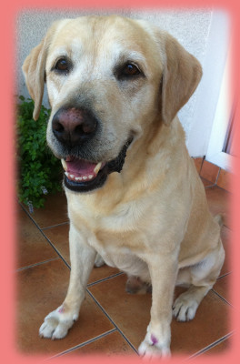

Wygląd

- Oczy
- Średniej wielkości; o inteligentnym, łagodnym wyrazie; brązowe lub orzechowe.
- Uszy
- Niezbyt duże ani ciężkie, przylegające ściśle do głowy, osadzone dość daleko z tyłu.
- Zgryz
- Szczęka i zęby mocne, z doskonałym, regularnym i kompletnym zgryzem nożycowym, tj. górny rząd siekaczy przykrywa rząd dolny, stykając się z nim.
- Szyja
- Gładka, mocna, osadzona w poprawnie ustawionych łopatkach.
- Kończyny przednie
- Łopatki długie, ustawione ukośnie. Kończyny przednie o mocnym kośćcu, od łokcia do podłoża proste, zarówno widziane z przodu, jak i z boku.
- Tułów
- Klatka piersiowa szeroka i głęboka, z dobrze wysklepionymi żebrami. Prosta górna linia. Szerokie, silne, mocne lędźwie.
- Umaszczenie
- Czarne, biszkoptowe(w odcieniach od jasnokremowego do ogniście rudego) lub czekoladowe(występujące najrzadziej)
- Śierść
- Cecha charakterystyczna; krótka, gęsta, przylegająca, niefalista, twarda w dotyku. Nieprzepuszczający wilgoci podszerstek.
- Łapy
- Okrągłe, zwarte; dobrze wysklepione palce i poprawnie rozwinięte opuszki. Krótkie pazury nie wyrastają poza linię łapy.
- Ogon
- Cecha charakterystyczna; bardzo gruby u nasady, zwężający się ku końcowi, średniej długości, bez "pióra", pokryty krótkim, grubym, gęstym włosem.
- Kończyny tylne
- Zad dobrze wykształcony, nieopadający w kierunku ogona; dobrze kątowane stawy skokowe, krowia postawa w najwyższym stopniu niepożądana.
- Wrażenie ogólne
- Mocnej budowy, zwarty, bardzo aktywny; szeroka czaszka, klatka piersiowa dobrze rozwinięta, żebra dobrze wysklepione, lędźwie i kończyny tylne mocne i szerokie.